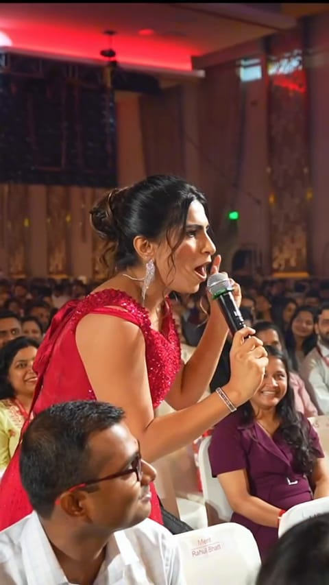

Draft copy
Questions organisers ask.
Answers come from her public posts. Where only Nisha can answer, it says so.

Booking
How far in advance should we book?
How does the booking process work?
For now, start with the Request availability form on this site: six short steps, then “Send event enquiry”.
How is availability confirmed?
What are her fees and typical durations?
Event
What types of events does Nisha host?
Corporate conferences, sales and partner meets, awards and R&R nights, product and brand launches, report launches, celebrity meet-and-greets, press conferences, red carpets, pageants, virtual and on-camera formats.
Basis: Formats in her work record
Does she customise her hosting?
Mahindra X-Mart 2017: a 'simple' conference brief that she turned into games and dancing; Samsung Galaxy Note 8 launch 2017: a short Q&A that became 'one riot of laughter'.
Basis: Her posts BW-xBeMBoGQ, BZTCpPXBj4F
Can she work with an event agency?
Yes. Her posts show events she hosted through several event agencies. Agencies are not named here until each one agrees.
Basis: Agency credits in her posts
Does she host weddings or private events?
Sangeet hosting appears in her posts from 2016 to 2021.
Basis: Her posts, 2016–2021
Moderation
Does she moderate panels?
Her posts show WOW Dialogues panels (EVENTFAQS, 2019) and a virtual panel at The Machinist (2020). No recent live footage yet.
Can she conduct fireside chats?
A seated on-stage interview with Shraddha Kapoor at Lipton’s meet-and-greet (Mumbai, 2024).
Can she interview speakers and executives?
On-camera interviews with executives at the IGI D Show (Dubai, 2023), and red-carpet interviews at the Jio Filmfare Awards (Mumbai, 2018).
Preparation
Does she attend rehearsals?
Does she work with the event script?
Cue cards are visible in her work across a decade; she describes scripting and 'homework' before shows.
Basis: Her posts BqIJLmiA10G, DMTFukeIme7, CeooRPEq4xj
Can she adapt to last-minute changes?
In her own account: a 2021 ICICI Prudential Life awards night with a downpour, setup issues and many last-minute changes; and a five-minute changeover from a conference to a gala in Baku (2024).
The ICICI Prudential Life story
Basis: Her posts CQYsSaxA00T, DAIT-pOIOj7
Counts to confirm
Location
Does Nisha travel?
Yes: her posts show events in 30+ cities, in India and abroad.
Does she host international events?
Yes. Her posts show work in 16 countries outside India since 2017, most recently Sri Lanka, New Zealand, Vietnam and South Korea in 2026.
Languages
Which languages does she host in?
English and Hindi in her posts and stage footage, to confirm with Nisha.
Virtual
Does she host virtual or hybrid events?
Virtual, yes: awards, conferences and meet-and-greets from 2020 to 2023, for ICICI Prudential Life, MMA Impact India, Tata Consumer Products, JSW × Bengaluru FC and The Machinist.